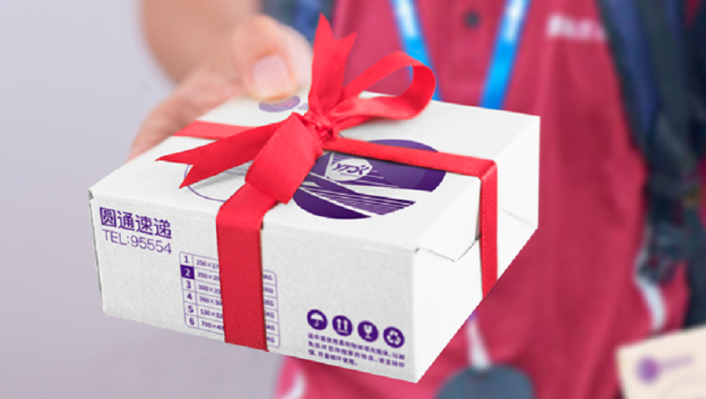

菜鸟裹裹发展历程,离不开你我
2010年，随着淘宝交易量的激增，阿里开始重视物流配送环节。
2011年，菜鸟的雏形显现，阿里将物流战略聚焦于IT+实体网络节点建设。
2013年，阿里系菜鸟网络横空出世，定位社会化协同平台。
2015年第一届菜鸟江湖大会上，首提快递、仓配、跨境、农村和驿站五大战略方向.
2017年全球智慧物流峰会上，菜鸟宣布开放性地赋能整个物流行业.
2019年的全球智慧物流峰会，菜鸟公布第二个五年战略